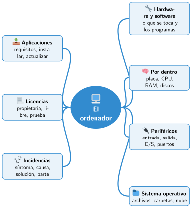

Bloque I · El ordenador y el teclado
UD01 El ordenador
RA2Instala y actualiza aplicaciones informáticas relacionadas con la tarea administrativa razonando los pasos a seguir en el proceso.

Sesiones
- Sesión 1.1 Hardware y software
- Sesión 1.2 Dentro del ordenador: placa base, CPU y memorias
- Sesión 1.3 Tarjeta gráfica y periféricos
- Sesión 1.4 El sistema operativo, los archivos y el navegador
- Sesión 1.5 Instalar aplicaciones y licencias
- Sesión 1.6 ¿Qué le pasa a mi ordenador?
Al terminar la unidad
Mapa mental de la unidad

✏️ Repasa la unidad con el mapa: tapa una rama y explica en voz alta lo que pone.